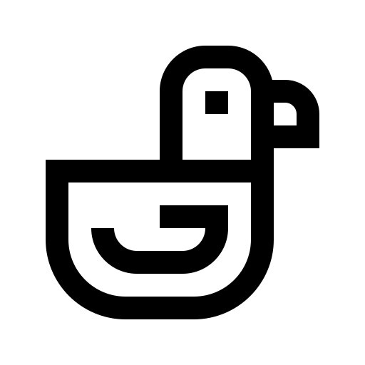

The Qualifying Round

The Wise Duckling says:"To heal yourself, you might seek within yourself". We're not sure what he's on about.
Problem Statement:
A hacktivist group on campus is looking around for new talent for an upcoming cyber-attack on Big3D, a 3D printer manufacturing company, and you are eager to join.
The repaired .gcode could be any of the three chess pieces (pictured in the package). You should repair it to reconstruct only one of the pieces. While there are no wrong answers, there is a correct answer.
Be sure to document all your attempts and thought processes in a report and submit it along with the attempted .gcode repair to csaw-3D@nyu.edu
Contact Us:
If you have any questions, please contact us at csaw-3d@nyu.edu